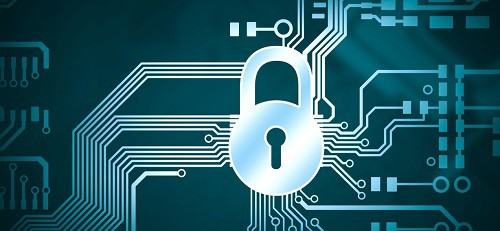

How to Prevent Unauthorized Computer Access
Steps to prevent unauthorized computer access

Taking steps to prevent unauthorized computer access is important for a wide
number of reasons, including preventing others from installing spyware and
deleting your important files, or even creating viruses. By making changes
to your computer to prevent unauthorized access, you are also protecting your
personal privacy. Here are some steps to take to properly secure your computer
and prevent others from accessing your files on both the Windows and Macintosh
operating systems.
Step 1: Set up password
protection
Enable password protection on your computer if it is not already set up. Make sure you
are using a personal password you have chosen versus the default password.
When creating your password, be sure to incorporate numbers or special characters
to make it difficult for others to guess.
Change your password often, at least every 2 months.
Do not leave your password written down in a place where others can easily find it.
Step 2: Install a hardware
or software firewall
A hardware firewall will protect all the computers connected to the network and can
often be set up through the network router.
A software firewall requires you to install software that will protect only that
specific computer.
Step 3: Install antivirus
software or a spyware protection program
To prevent hackers or other programs from spying on your Internet habits or collecting
your passwords and credit card data, be sure to install antivirus software or spyware
protection.
Step 4: Use caution when reading
email
Open email attachments only if you trust the party that sent it. Many times, email
attachments
will house viruses and malicious spyware that will allow unauthorized access to your
computer.
Ignore or delete phishing emails, which are email messages that masquerade as official
emails
from your bank or shipping companies that want you to divulge sensitive and private
information;
such as your social security number, passwords and more.
Step 5: Learn how to lock your
computer
If you need to step away from your computer for a break and want to keep it powered on, lock
your
computer so it requires a password, preventing unauthorized access.
For Windows 7 users, go to the Start menu, select the right pointing area from the Shutdown
category and select "Lock."
For Macintosh users, use keystrokes of "Shift," "Command," and the letter "q," pressing all
buttons at the same time. You may also select "Log Out" from the Apple pull-down menu.
For Windows XP users, use keystrokes of "Ctrl," "Alt," and "Delete," pressing all buttons at
the same time, and select "Lock Workstation."